This tutorial gives you an easy to follow step-by-step introduction into the basic concepts of a real-time operating system. It is based on CMSIS-RTOS RTX and tries to be generic so that it can be used with any underlying Cortex-M based hardware. The tutorial is divided into the following sections:
- RTOS Blinky : Provides an easy start for beginners. At the end of this tutorial, an LED will flash on your development board.
- Idle Demon : Shows how to use the Idle task to manage the runtime and energy consumption of your program.
- Signals : Demonstrates how to use signals for inter-thread communication.
- Supervisor Calls (SVC) : Gives an example of how to integrate ISRs with an RTOS.
- Semaphores : Explains how to manage and protect access to shared resources.
- Mutexes : Shows how to synchronize the execution of threads using mutexes.
- Messages : Demonstrates how to pass messages from one thread to another.
- Mailbox : Explains how to send mails from one thread to another.
RTOS Blinky
Start by opening uVision. Select Project and then New uVision Project.... In the window that opens, press New Folder and name the new folder RTOS. Click Open. Then, enter in the File name box RTOS and click on Save.
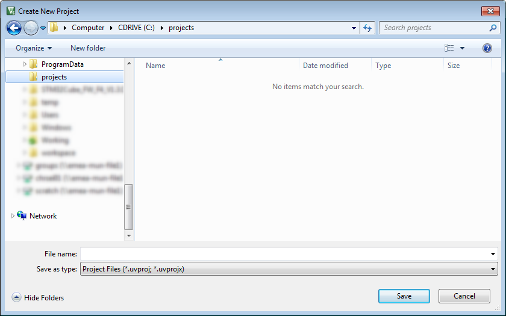
Create new project dialog
A new window opens that asks you to select your target device. In this tutorial, the LPC1857 will be used, but any supported device will be ok (please do not forget to use Pack Installer to install support for your target device before creating a new project).
Enter LPC1857 in the Search box, click on the device and click OK:
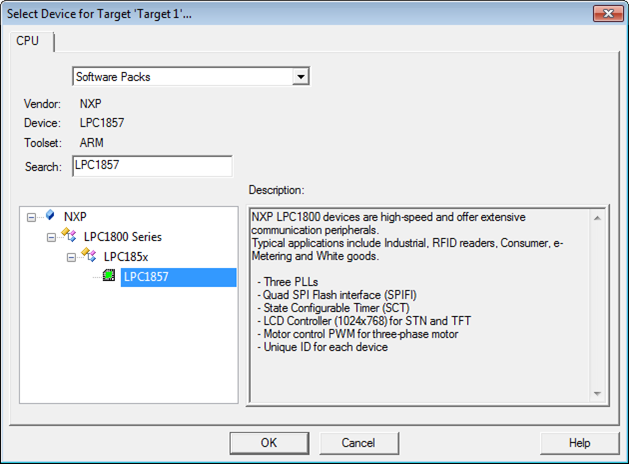
Select your target device
The Manage Run-Time Environment window opens that allows us to select the required software components for the project. Select the following components:
- Board Support (Variant MCB1800):LED (API):LED
- CMSIS:RTOS (API):Keil RTX
Then, press the Resolve button and then OK.
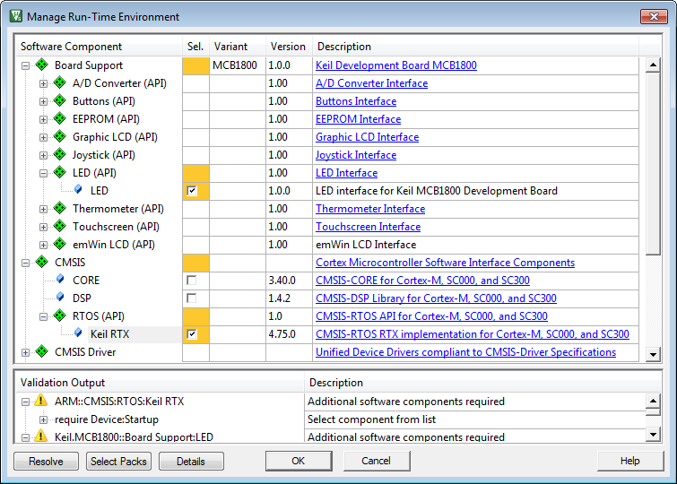
Select required software components
- Note
- If you development board does not have a Board Support entry, simply create two functions (LED_On/LED_Off) so that the rest of the code of this tutorial will run on your hardware. Refer to the Board Support documentation for more information.
The Project window will show all software components that are added to the project:
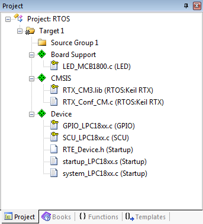
Software components in the Project window
The green diamonds are the software component packages. The files with yellow keys are linked from the software pack and write protected. The remaining files are configuration files:
- startup_lpc1800xx.s for stack and heap configuration
- RTE_Device.h to configure the device's peripheral interfaces
- RTX_Conf_CM.c for configuring CMSIS-RTOS RTX
The Keil RTX software pack provides various user code templates. We add the template for the main function. Right-click on Source Group 1 and select Add New Item to Group ‘Source Group 1’....
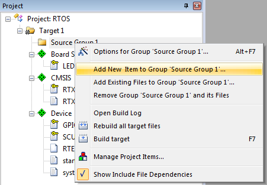
Add New Item to Group
Click on User Code Template and select CMSIS-RTOS ‘main’ function. Press Add. This adds the file main.c to Source Group 1.
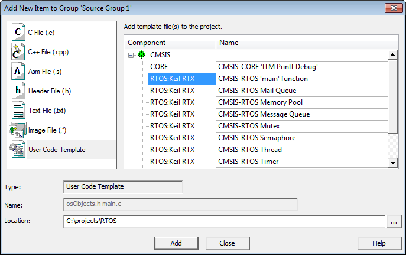
Add user code template 'CMSIS-RTOS main function'
Add a second user code template: select CMSIS-RTOS Thread and press Add. Add a third user code template by selecting CMSIS-RTOS Thread again. Name it Thread_1.c before pressing the Add button.
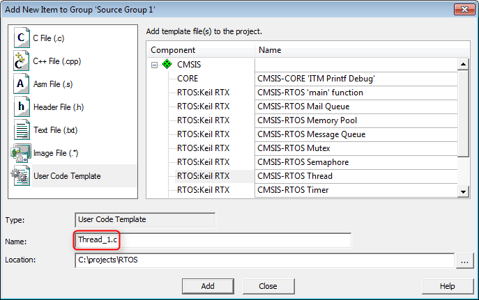
Add user code template 'CMSIS-RTOS Thread'
Source Group 1 should look like this:
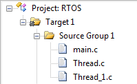
Source Group 1 after adding the three templates
Adapt Thread_1.c
The file Thread_1.c should be open. Change the code as follows:
void Thread_1 (void const *argument);
int Init_Thread_1 (void) {
if(!tid_Thread_1) return(-1);
return(0);
}
void Thread_1 (void const *argument) {
while (1) {
;
}
}
- Note
- Change the object names to Thread_1 as shown above. This creates two threads: Thread and Thread_1
- Warning: in Init_Thread_1 (void) make sure to change osThread(Thread_1) as well.
Adapt main.c
Click on the main.c tab and change the code as follows:
#define osObjectsPublic
#include "osObjects.h"
extern int Init_Thread (void);
extern int Init_Thread_1 (void);
int main (void) {
Init_Thread();
Init_Thread_1();
}
Adapt Thread.c
Click on the Thread.c tab and change the code as follows:
#include "Board_LED.h"
:
void Thread (void const *argument) {
LED_Initialize();
while (1) {
LED_On(0);
LED_Off(0);
}
}
- Note
- Add the header file #include “Board_LED.h”
- In the thread code add the LED_initilize() function
- In the while loop add the code to flash the user LED
- osDelay() is a CMSIS-RTOS function which provides a delay in milliseconds
- Warning: If you forget to add LED_Initilize(), the code will build but the LEDs will not flash
Adapt Thread_1.c (again)
Click on the Thread_1.c tab and do the same as for Thread.c. Change the LED number to 1:
#include "Board_LED.h"
:
void Thread_1 (void const *argument) {
LED_Initialize();
while (1) {
LED_On(1);
LED_Off(1);
}
}
Configure CMSIS-RTOS RTX
Double-click on RTX_Conf_CM.c and select the Configuration Wizard. Press Expand All.
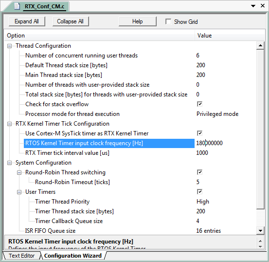
Configuration of CMSIS-RTOS RTX
Set the RTOS Kernel Timer input clock frequency [Hz] to 180000000 as this is the core clock frequency of our target device. Not setting this correctly, will result in a wrong LED flashing interval.
Save and build the program
Select File and then Save All (you might see an info box that the project is saved in the new .uvprojx format). Select Project and then Build target or press F7 to build the complete project. It should build without any errors or warnings:
Configure the debugger
Select Project and then Options for Target 'Target 1'... or press ALT+F7 to set the options for your target.
Debugging
- Press CTRL+F5 to start a Debug session.
- Run the code (F5).
Idle Demon
If no thread is running, CMSIS-RTOS RTX will enter an idle thread. The default idle thread is stored in RTX_Conf_CM.c. It is called os_idle_demon. Typically, power management code can be added here:
The idle demon tutorial runs in simulator mode so that no actual hardware is required. Install the Keil::STM32F1xx_DFP containing the STM32F103RB device. Setup the project:
- Create a project called Idle and select the STM32F103RB as the target device.
- Select the CMSIS:RTOS (API):Keil RTX software component and resolve any validation problems.
- Add the CMSIS-RTOS 'main' function user code template to the project.
- Add a C source file called led.c to the project.
- Add a header file called led.h to the project.
Adapt led.h
Click on the led.h tab and add these lines of code:
extern void LED_Init (void);
extern void LED_On(uint32_t output);
extern void LED_Off(uint32_t output);
Adapt led.c
Click on the led.c tab and add the following:
#include "stm32f10x.h"
void LED_Init (void) {
GPIOB->CRH = 0x33333333;
}
void LED_On(uint32_t output) {
GPIOB->ODR |= output << 8;
}
void LED_Off(uint32_t output) {
GPIOB->ODR &= ~(output << 8);
}
Adapt main.c
Click on the main.c tab and edit the code as follows:
#define osObjectsPublic // define objects in main module
#include "osObjects.h"
#include "stm32f10x.h"
#include "led.h"
void led1 (void const *argument)
{
for (;;)
{
LED_On(1);
LED_Off(1);
}
}
void led2 (void const *argument)
{
for (;;)
{
LED_On(2);
LED_Off(2);
}
}
int main (void) {
LED_Init();
}
Configure CMSIS-RTOS RTX
Double-click on RTX_Conf_CM.c and select the Configuration Wizard. Press Expand All. Set the RTOS Kernel Timer input clock frequency [Hz] to 16000000.
Save and build the program
Select File and then Save All (you might see an info box that the project is saved in the new .uvprojx format). Select Project and then Build target or press F7 to build the complete project. It should build without any errors or warnings.
Configure the target
Select Project and then Options for Target 'Target 1'... or press ALT+F7 to set the options for your target. Select the Debug tab and select Use Simulator. In the Dialog DLL box enter DARMSTM.DLL and in the Parameter box enter -pSTM32F103RB:
Debugging
Press CTRL+F5 to start a Debug session. As this program runs in simulator mode, we can make use of the advanced debugging tools of uVision without using a debug probe. Go to View -> Analysis Windows -> Performance Analyzer. Expand the tree to see the time spent in the idle demon.
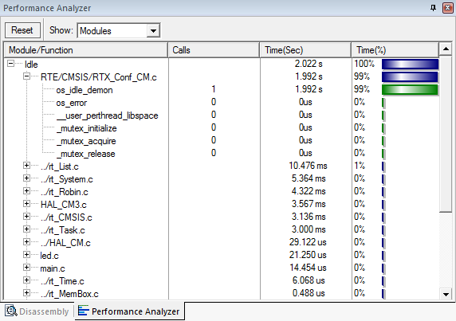
Performance Analyzer showing the time spent in Idle
Adapt the Idle Demon
Leave the Debug session by pressing CTRL+F5 again and open the RTX_Conf_CM.c file in Text Editor mode. Find the os_idle_demon function and change the code to the following:
- Note
- The __wfi() function waits for an interrupt to happen. This halts the processor until it needs to restart (on a scheduler tick or peripheral interrupt).
Check the changed behavior
- Rebuild the code by pressing F7.
- Enter a Debug session (CTRL+F5).
- Run the code (F5).
- Find the Idle demon in the Performance Analysis window:
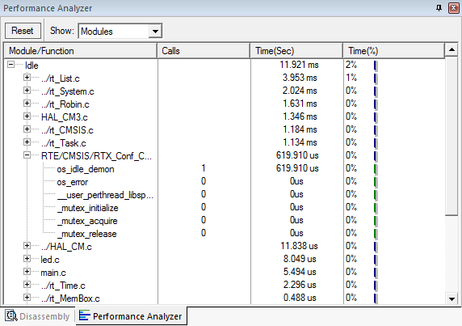
Less processor cycles with __wfi() during Idle
The processor is now frozen during Idle cycles. Less processor cycles will lead to a lowered energy consumption during runtime.
Signals
In this tutorial, we will be creating two LED threads. led_thread1 will be waiting for a signal that will be set by led_thread2. To be able to see the program flow, led_thread2 will us the osDelay function to wait 500 ms before setting the signal for led_thread1. Here's how the program works:
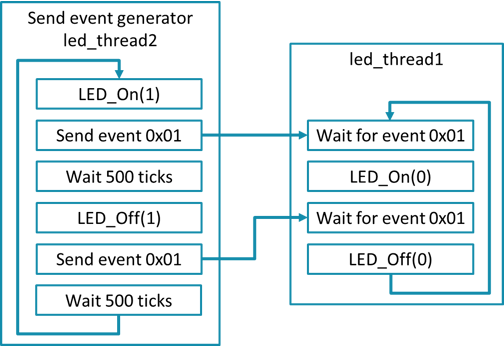
Simple signal event communication
To run the signals tutorial, create a project with the following:
- Create a project called Signals and select your target device.
- Select the Board Support:LED (API):LED (if available; otherwise, create two functions LED_On/LED_Off) and CMSIS:RTOS (API):Keil RTX software components and resolve any validation problems.
- Add the CMSIS-RTOS 'main' function user code template to the project.
Adapt main.c
Click on the main.c tab and change the code to:
#define osObjectsPublic // define objects in main module
#include "osObjects.h"
#include "Board_LED.h"
void led_Thread1 (void const *argument);
void led_Thread2 (void const *argument);
void led_Thread1 (void const *argument) {
for (;;) {
LED_On(0);
LED_Off(0);
}
}
void led_Thread2 (void const *argument) {
for (;;) {
LED_On(1);
LED_Off(1);
}
}
int main (void) {
LED_Initialize();
}
osSignalWait() is now used in led_thread1(). It is triggered by osSignalSet() in led_thread2. This synchronizes the execution of both threads.
Save, build and debug the program
- Select File and then Save All.
- Select Project and then Build target or press F7 to build the complete project. It should build without any errors or warnings.
- Enter a Debug session (CTRL+F5).
- Run the code (F5).
Supervisor Calls (SVC)
This tutorial will do the following:
- It configures two LED flashing threads
- The two LED threads flash one user LED (on and off)
- It configures an external interrupt attached to the user button of the development board (on port A bit 0)
- The second user LED is flashed when the user button is pressed:
- The user button is on port A bit 0
- The external interrupt controller (EXTI) can be configured to make this pin an external interrupt line
To run this tutorial, open the previous one or create it as described in Signals. Then
- Add the CMSIS-RTOS User SVC user code template to the project.
Adapt SVC_Table.s
Uncomment lines 44 and 49 (remove the ;):
DCD __SVC_1 ; user SVC function
- Note
- The SVC_Table.s file provides a lookup table for the software interrupt calls.
- For each SVC you use you must import the SVC label and extend the SCV table
Adapt main.c
Open main.c and change it to the following:
#define osObjectsPublic // define objects in main module
#include "osObjects.h"
#include "stm32f4xx.h"
#include "stm32f4xx_hal.h"
#include "Board_LED.h"
void led_Thread1 (void const *argument);
void led_Thread2 (void const *argument);
void exti_Thread (void const *argument);
void __svc(1) init_EXTI (void);
void EXTI0_IRQHandler(void) {
__HAL_GPIO_EXTI_CLEAR_IT(GPIO_PIN_0);
}
void exti_Thread (void const *argument) {
for (;;) {
LED_On(1);
LED_Off(1);
}
}
void led_Thread1 (void const *argument) {
for (;;) {
LED_Off(0);
}
}
void led_Thread2 (void const *argument) {
LED_Initialize ();
for (;;) {
LED_On(0);
}
}
int main (void) {
init_EXTI();
}
void __svc(1) init_EXTI (void);
void __SVC_1 (void) {
GPIO_InitTypeDef GPIO_InitStruct;
__GPIOA_CLK_ENABLE();
GPIO_InitStruct.Pin = GPIO_PIN_0;
GPIO_InitStruct.Mode = GPIO_MODE_IT_RISING;
GPIO_InitStruct.Pull = GPIO_PULLDOWN;
GPIO_InitStruct.Speed = GPIO_SPEED_LOW;
HAL_GPIO_Init(GPIOA, &GPIO_InitStruct);
NVIC_EnableIRQ( EXTI0_IRQn );
}
- Note
- This code works on the STM32F429I-Discovery board. It uses the STM32F4xx HAL for configuring the GPIO pin. To do the same for your hardware, please consult the device's documentation.
Save, build and debug the program
- Select File and then Save All.
- Select Project and then Build target or press F7 to build the complete project. It should build without any errors or warnings.
- Enter a Debug session (CTRL+F5).
- Run the code (F5).
Mutexes
This tutorial is again running in the µVision simulator (refer to the Idle Demon tutorial). Two threads will be created that try to output a stream of either 1's or 2's to the UART.
Install the Keil::STM32F1xx_DFP containing the STM32F103RB device. Setup the project:
- Create a project called Mutex and select the STM32F103RB as the target device.
- Select the CMSIS:RTOS (API):Keil RTX software component and resolve any validation problems.
- Add the CMSIS-RTOS 'main' function user code template to the project.
- Add a C source file called uart.c to the project.
- Add a header file called uart.h to the project.
Adapt uart.h
Click on the uart.h tab and add these lines of code:
extern void USART1_Init (void);
extern int SendChar (int ch);
extern int GetKey (void);
Adapt uart.c
Click on the uart.c tab and add the following:
#include <stm32F10x.h>
void USART1_Init (void) {
int i;
RCC->APB2ENR |= ( 1UL << 0);
AFIO->MAPR &= ~( 1UL << 2);
RCC->APB2ENR |= ( 1UL << 2);
GPIOA->CRH &= ~(0xFFUL << 4);
GPIOA->CRH |= (0x0BUL << 4);
GPIOA->CRH |= (0x04UL << 8);
RCC->APB2ENR |= ( 1UL << 14);
USART1->BRR = 0x0271;
USART1->CR1 = (( 1UL << 2) |
( 1UL << 3) |
( 0UL << 12) );
USART1->CR2 = 0x0000;
USART1->CR3 = 0x0000;
for (i = 0; i < 0x1000; i++) __NOP();
USART1->CR1 |= (( 1UL << 13) );
}
int SendChar (int ch) {
while (!(USART1->SR & USART_SR_TXE));
USART1->DR = (ch & 0x1FF);
return (ch);
}
int GetKey (void) {
while (!(USART1->SR & USART_SR_RXNE));
return ((int)(USART1->DR & 0x1FF));
}
Adapt main.c
Click on the main.c tab and edit the code as follows:
#define osObjectsPublic // define objects in main module
#include "osObjects.h"
#include "stm32f10x.h"
#include "uart.h"
void uart_Thread1 (void const *argument);
void uart_Thread2 (void const *argument);
void uart_Thread1 (void const *argument) {
uint32_t i;
for (;;) {
for( i=0;i<10;i++) {
SendChar('1');
}
SendChar('\n');
SendChar('\r');
}
}
void uart_Thread2 (void const *argument) {
uint32_t i;
for(;;) {
for( i=0;i<10;i++) {
SendChar('2');
}
SendChar('\n');
SendChar('\r');
}
}
int main (void) {
USART1_Init();
}
Configure CMSIS-RTOS RTX
Double-click on RTX_Conf_CM.c and select the Configuration Wizard. Press Expand All. Set the RTOS Kernel Timer input clock frequency [Hz] to 16000000.
Save and build the program
Select File and then Save All (you might see an info box that the project is saved in the new .uvprojx format). Select Project and then Build target or press F7 to build the complete project. It should build without any errors or warnings.
Configure the target
Select Project and then Options for Target 'Target 1'... or press ALT+F7 to set the options for your target. Select the Debug tab and select Use Simulator. In the Dialog DLL box enter DARMSTM.DLL and in the Parameter box enter -pSTM32F103RB:
Debugging
Press CTRL+F5 to start a Debug session. Open the View -> Serial Windows -> UART #1 window. Press F5 to run the program. You will see that both threads try to output to the UART at the same time. Because of the time slicing, the threads corrupt each others output:
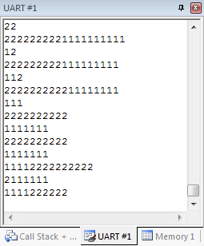
Adding the Mutex
Previously, the Mutex had already been created in the main thread, but has not been used by the two output threads.
- Exit the debugger (CTRL+F5).
- Uncomment the osMutexWait and osMutexRelease calls in each thread.
- Rebuild the code (F7).
- Restart the debugger (CTRL+F5).
- Run (F5) the code and observe the new output in the UART window. The Mutex now controls the access to the UART, so that the output streams are now interleaved:
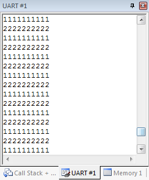
Semaphores
In some cases, we would like to allow a limited number of threads to access certain resources. For example, an embedded web server might be able to support a limited number of simultaneous requests (due to memory limitations). In such cases, semaphores are used instead of a Mutex.
In this tutorial, we create four threads that each toggle an LED on a development board (make sure that your hardware supports four LEDs, otherwise reduce the number of blinky threads), and use a semaphore to limit the number of active LEDs to 2.
Project Setup
- Create a project called Semaphore and select your target device.
- Select the Board Support:LED (API):LED (if available; otherwise, create two functions LED_On/LED_Off) and CMSIS:RTOS (API):Keil RTX software components and resolve any validation problems.
- Add the CMSIS-RTOS 'main' function user code template to the project.
- Add the CMSIS-RTOS Semaphore user code template to the project.
Adapt Semaphore.c
Click on the Semaphore.c tab and add these lines of code:
#include "Board_LED.h"
void blinky1 (void const *argument);
void blinky2 (void const *argument);
void blinky3 (void const *argument);
void blinky4 (void const *argument);
int Init_Semaphore (void) {
if(!tid_blinky1) return(-1);
if(!tid_blinky2) return(-1);
if(!tid_blinky3) return(-1);
if(!tid_blinky4) return(-1);
return(0);
}
void blinky1(void const *argument) {
while(1) {
LED_On(1);
LED_Off(1);
}
}
void blinky2(void const *argument) {
while(1) {
LED_On(1);
LED_Off(1);
}
}
void blinky3(void const *argument) {
while(1) {
LED_On(1);
LED_Off(1);
}
}
void blinky4(void const *argument) {
while(1) {
LED_On(1);
LED_Off(1);
}
}
Adapt main.c
Click on the main.c tab and add these lines of code:
#define osObjectsPublic // define objects in main module
#include "osObjects.h"
#include "Board_LED.h"
extern int Init_Semaphore (void);
int main (void) {
LED_Initialize();
Init_Semaphore();
}
Configure CMSIS-RTOS RTX, save and build the program
- Double-click on RTX_Conf_CM.c and configure your clock settings.
- Select File and then Save All (you might see an info box that the project is saved in the new .uvprojx format).
- Select Project and then Build target or press F7 to build the complete project. It should build without any errors or warnings.
- Enter a Debug session (CTRL+F5) and run (F5) the program.
Observe how the LEDs are blinking. You can also use the System and Thread Viewer (go to Debug -> OS Support -> System and Thread Viewer) to check how the four threads are waiting for the semaphore token to become available:
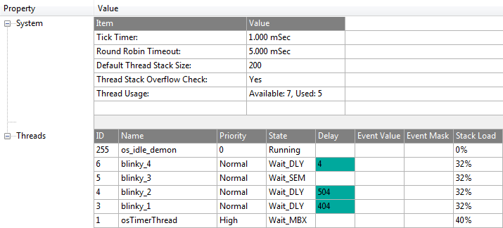
System and Thread Viewer showing the thread states
Messages
In this tutorial, a message queue is created. led_Thread2 puts data into the queue, while led_Thread1 reads from the queue. A development board with at least two LEDs is required to run the program.
Project Setup
- Create a project called Message and select your target device.
- Select the Board Support:LED (API):LED (if available; otherwise, create two functions LED_On/LED_SetOut) and CMSIS:RTOS (API):Keil RTX software components and resolve any validation problems.
- Add the CMSIS-RTOS 'main' function user code template to the project.
- Add the CMSIS-RTOS Message Queue user code template to the project.
Adapt MdgQueue.c
Click on the MdgQueue.c tab and add these lines of code:
#include "Board_LED.h"
void LED_Thread1 (void const *argument);
void LED_Thread2 (void const *argument);
#define MSGQUEUE_OBJECTS 16 // number of Message Queue Objects
int Init_MsgQueue (void) {
if(!Q_LED) {
;
}
if(!tid_LED_Thread1) return(-1);
if(!tid_LED_Thread2) return(-1);
return(0);
}
void LED_Thread1(void const *argument) {
for (;;) {
}
}
void LED_Thread2(void const *argument) {
for (;;) {
LED_On(3);
LED_On(3);
LED_On(3);
LED_On(3);
}
}
Adapt main.c
Click on the main.c tab and add these lines of code:
#define osObjectsPublic // define objects in main module
#include "osObjects.h"
#include "Board_LED.h"
extern int Init_MsgQueue (void);
int main (void) {
LED_Initialize();
Init_MsgQueue();
}
Configure CMSIS-RTOS RTX, save and build the program
- Double-click on RTX_Conf_CM.c and configure your clock settings.
- Select File and then Save All (you might see an info box that the project is saved in the new .uvprojx format).
- Select Project and then Build target or press F7 to build the complete project. It should build without any errors or warnings.
- Enter a Debug session (CTRL+F5) and run (F5) the program.
Observe how the two LEDs are blinking. You can also use the System and Thread Viewer (go to Debug -> OS Support -> System and Thread Viewer) to check how thread1 is waiting for mailbox:
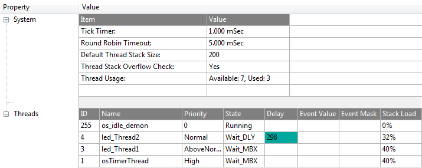
System and Thread Viewer showing the thread states
Mailbox
In this tutorial, a mailbox will be used to send data from a producer to a consumer thread. The data will be used to flash LEDs in various ways. A development board with at least two LEDs is required to run the program.
Project Setup
- Create a project called Mailbox and select your target device.
- Select the Board Support:LED (API):LED (if available; otherwise, create a function LED_SetOut) and CMSIS:RTOS (API):Keil RTX software components and resolve any validation problems.
- Add the CMSIS-RTOS 'main' function user code template to the project.
- Add the CMSIS-RTOS Mail Queue user code template to the project.
Adapt MailQueue.c
Click on the MailQueue.c tab and add these lines of code:
#include "Board_LED.h"
void LED_Producer (void const *argument);
void LED_Consumer (void const *argument);
#define mail_obj 16 // number of Message Queue Objects
typedef struct {
uint8_t LED0;
uint8_t LED1;
} mail_format;
int Init_MailQueue (void) {
if(!tid_LED_Producer) return(-1);
if(!tid_LED_Consumer) return(-1);
return(0);
}
void LED_Producer(void const *argument) {
uint8_t led0[12] = {1,0,0,0,1,1,1,1,0,0,0,0};
uint8_t led1[12] = {0,2,0,0,0,2,2,2,2,0,0,0};
uint8_t index;
mail_format *LEDtx = 0;
while(1) {
for(index=0;index<12;index++) {
LEDtx->LED0 = led0[index];
LEDtx->LED1 = led1[index];
}
}
}
void LED_Consumer(void const *argument) {
mail_format *LEDrx = 0;
while(1) {
LEDrx = (mail_format*)evt.
value.
p;
LED_SetOut(LEDrx->LED0|LEDrx->LED1);
}
}
}
Adapt main.c
Click on the main.c tab and add these lines of code:
#define osObjectsPublic // define objects in main module
#include "osObjects.h"
#include "stm32f4xx.h"
#include "Board_LED.h"
extern int Init_MailQueue (void);
int main (void) {
LED_Initialize();
Init_MailQueue();
}
Configure CMSIS-RTOS RTX, save and build the program
- Double-click on RTX_Conf_CM.c and configure your clock settings.
- Select File and then Save All (you might see an info box that the project is saved in the new .uvprojx format).
- Select Project and then Build target or press F7 to build the complete project. It should build without any errors or warnings.
- Enter a Debug session (CTRL+F5) and run (F5) the program.
Observe how the two LEDs are blinking.